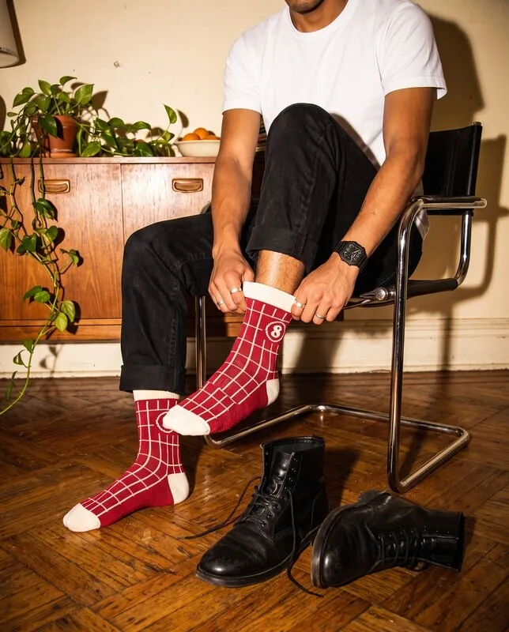
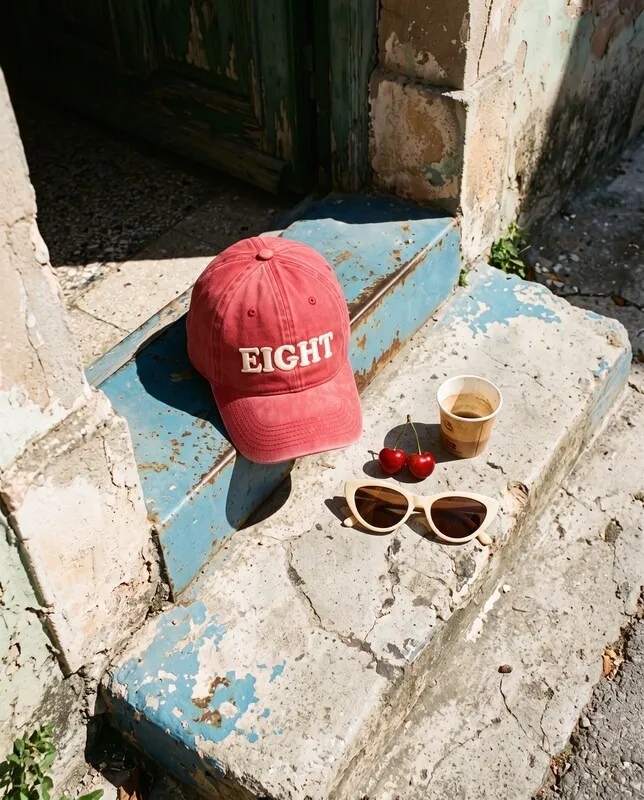
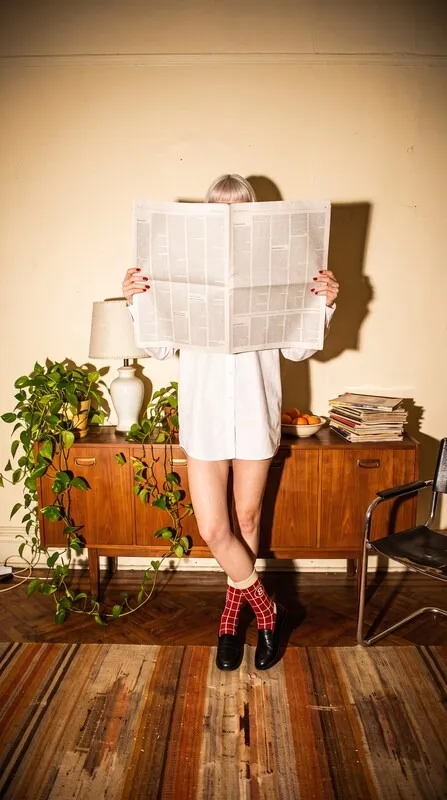

00:00:01:00Commercial · Brand & photo campaign
EIGHT
A streetwear brand that doesn't exist, launched with a photo campaign that looks like it does. Identity, product, casting, sets and six campaign frames, built as one AI pipeline.
- Category
- Brand & photo campaign
- Year
- 2026
- Client
- EIGHT (fictional brand)
- Type
- Concept
- Role
- Creative direction, art direction, AI pipeline
- Tools
- Magnific Spaces, Google Nano Banana 2.1






01 / 06
A fictional brand, built to show the process end to end: from a blank board to a campaign that could run on Instagram tomorrow.
Brief
EIGHT is a brand I invented to show how I run a campaign: a small streetwear label with three accessories — a cap, a fanny pack and a pair of socks — in cherry red and cream. The brief I set myself: launch it with a photo campaign that feels shot on 35 mm by a real team, with two recurring models, lived-in interiors and the logo legible on every product.
Challenge
Image models drift. A face changes from one shot to the next, a wordmark gets misspelled, a sock pattern turns into something else. A campaign only holds together if the same people, the same products and the same logo show up in every frame.
The idea
Run it like a real shoot. Cast first, make the product, build the sets, and only then take the photos — every frame generated from those references, never from scratch.
Process
- 01
Identity
Wordmark in a chunky 70s soft serif, an 8-in-a-circle monogram and a woven label. Two colours only. The logo feeds every packshot, so the letterforms match everywhere.
- 02
Product
Catalogue packshots of the cap, the fanny pack and the socks on the same warm grey seamless.
- 03
Casting
Character sheets for Inti and Lía — front, back, face and the details that make them recognisable (rings, tattoo, cherry earring, red nails).
- 04
Sets
Four locations with one look — a 70s living room, a kitchen, a pink bathroom and a sunny side street. 35 mm, direct flash, hard shadows.
- 05
Photos
Six frames in 4:5 and 9:16. Each one takes a model, a product and a set as references; the prompt only directs pose, framing and light.
The board
One board, four stages
Every base has its description wired into a generator. To change something — a hairstyle, a colour, a room — I edit the text, not the image, and everything downstream follows.
01 Identity
02 Product
 Cap — Packshot
Cap — Packshot Fanny pack — Packshot
Fanny pack — Packshot Socks — Packshot
Socks — Packshot03 Casting & sets
 Inti — Character sheet
Inti — Character sheet Lía — Character sheet
Lía — Character sheet Living — Set
Living — Set Street — Set
Street — Set04 Photos
Frame 2 — StreetFrame 3 — Kitchen01 · Identity & product
A brand in two colours
Cherry red and cream, a soft 70s serif and a monogram that works at the size of a sock ankle.
02 · Casting
Inti and Lía
Two character sheets do the job of a casting call. Every photo uses them as the reference, which is what keeps faces, hair and details consistent across the campaign.
03 · Sets
Four rooms, one look
Empty plates first, so each set exists before anyone walks into it. Same film stock, same flash, same warm cast.


04 · Campaign
The photos
Each frame combines a model, a product and a set. The prompt only directs what a photographer would — pose, framing, light — and keeps the poses a little odd, on purpose.
Deliverables
- Brand identity sheet — wordmark, monogram and woven label
- 3 product packshots
- 2 character sheets
- 4 set plates
- 6 campaign photos for feed (4:5) and stories (9:16)
- A reusable node board in Magnific Spaces — edit one description and the chain regenerates
Credits
- Creative direction & AI pipeline
- Lautaro Ferrandi
- Image model
- Google Nano Banana 2.1 (via Magnific)
Next in CommercialAI influencer & content system
Helena von Arx →